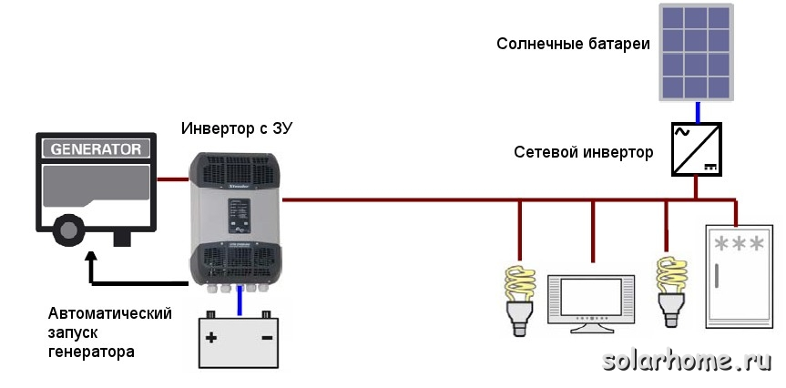
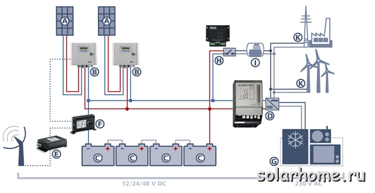
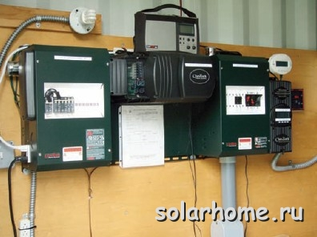
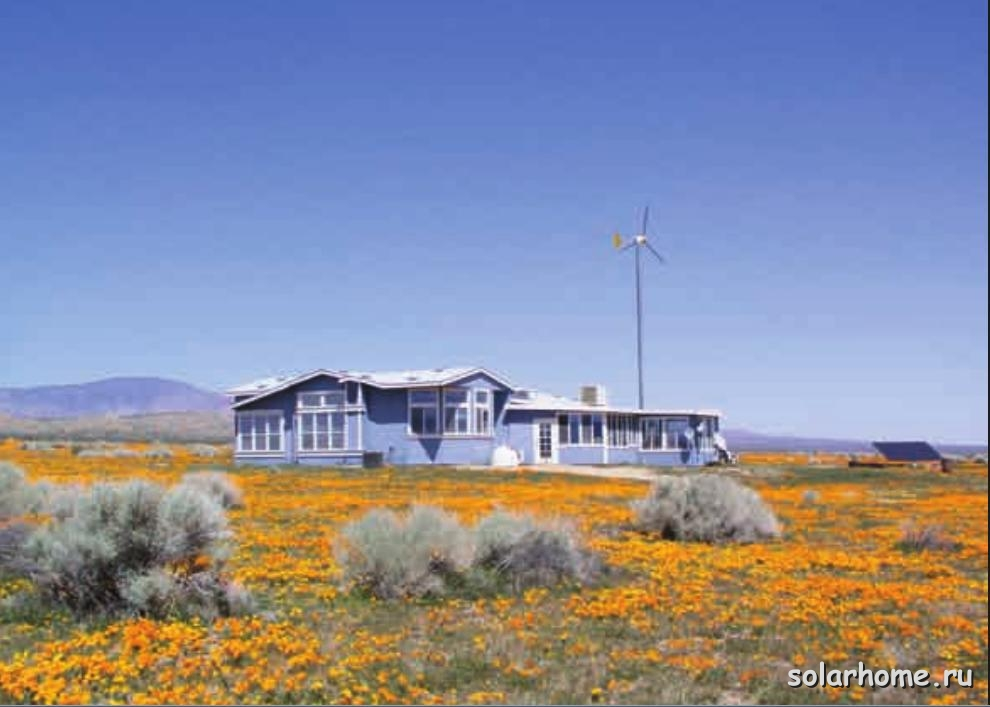
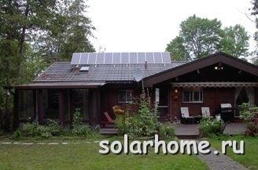
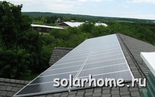
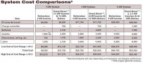

Гелиоэнергетика и электросети

Если вы не подключены к сети централизованного электроснабжения, вы имеете одно очень важное преимущество - независимость от сетей. Вы можете даже пожелать быть независимыми в том случае, когда у вас уже подключена сеть электроснабжения. Вы можете не подчиняться правилам, которые устанавливает местная энергосеть. Вам не страшны повышения цен на электроэнергию, аварии в сетях, обрывы в линиях электропередач, ухудшение качества электроэнергии из-за перегрузок в сетях.
Если вы выбираете себе участок для дома, вы скорее всего обнаружите, что участки в удалении от сетей централизованного электроснабжения стоят дешевле. Большинство людей не готовы (или психологически, или из-за недостатка знаний) иметь собственную электростанцию и быть "сам себе энергосеть". Поэтому стоимость земли формируется согласно спросу на такие участки. Иметь собственную электростанцию и быть не подключенным к сетям может оказаться гораздо дешевле, чем стоимость протяжения линии электропередач и подключения к сетям централизованного электроснабжения. Однако, нужно быть готовым к тому, что, если вы не подключены к сетям, нужно будет заплатить за покупку и обслуживание электрогенерирующей системы на возобновляемых источниках энергии.

Автономная фотоэлектрическая система электропитания с резервным генератором

Фотоэлектрическая система электропитания с контроллерами постоянного тока
Не соединенные с сетью системы также могут иметь некоторые преимущества по сравнению с работающими параллельно с сетью, когда речь идет об укрупнении системы. Несмотря на то, что обе системы - модульные, зачастую более легко нарастить не соединенную с сетью систему как только вы сможете себе это позволить. На самом деле, много владельцев автономных систем с ограниченным бюджетом принимают за норму постепенное наращивание фотоэлектрической системы и снижение доли генерируемой от дизель-генератора электроэнергии при добавлении солнечных батарей. При пониженных напряжениях в цепочке солнечных модулей (от 12 до 72В), возможно постепенное добавление модулей - от 1 до 4 одновременно. Работающие параллельно с сетью безаккумуляторные системы обычно имеют напряжение солнечных модулей от 150 до 600 В, и конкретные инверторы имеют свой рабочий интервал входного напряжения, а также определенную зависимость КПД от этого параметра. Добавление цепочек потребует большего количества модулей и, возможно, замены инвертора (или добавления еще одного).
За исключением случая, когда вы можете позволить себе заведомо избыточную систему, автономная генерация стимулирует вас использовать энергию максимально эффективно. Это большое преимущество, особенно если вы заботитесь о вашем влиянии на окружающую среду. Самые энергоэффективные дома - это не соединенные с сетью дома. Когда вам нужно получать энергию от ограниченного источника, вы обязательно задумаетесь, как наиболее рационально использовать генерируемую энергию.
Есть также множество менее материальных преимуществ быть автономным от сети. Включая удовлетворение от того, что вы используете электроэнергию с ответственностью и пониманием. И может быть ваши соседи будут думать, что вы опережаете свое время.
Недостатки автономных системКогда вы решаетесь на отключение от сети, вы принимаете на себя некоторые обязанности, которые в настоящее время исполняют местные электросети, от услуг которых вы хотите отказаться. Наш опыт показывает, что ваше недовольство сетями будет тем меньше, чем больше их обязанностей вы принимаете на себя.

Во-первых, генерация собственной электроэнергии стоит денег. Если вы уже подключены к сети, то скорее всего автономная система с возобновляемыми источниками энергии будет производить для вас более дорогую электроэнергию. Исключение может составлять случай, если в вашем регионе действуют специальные меры финансовой поддержки для владельцев электростанций, использующих возобновляемую энергию, или стоимость электроэнергии от сетей очень высока (или действуют оба эти фактора).Здесь нужно заметить, что большинство финансовых механизмов стимулирования генерации от ВИЭ действуют для систем, соединенных с сетью и не применимы для полностью автономных систем с аккумуляторными батареями. Например, даже тот закон, который принят в России в 2007 году, предоставляет бонусы и особые преференциальные условия только при продаже электроэнергии, сгенерированной от возобновляемых источников энергии, и проданных на оптовом рынке электроэнергии.Конечно, если вы задумываетесь о долгосрочной перспективе, это меняет картину. Но большинство людей, которые думают, что отключившись от сетей централизованного электроснабжения они уменьшат свои расходы на электроэнергию, ждет разочарование. При уже имеющемся подключении к сетям, вам не нужно платить за протяжение линии электропередачи и подключение к сервису. Эта стоимость в разных регионах различна, и может составлять до 2000 рублей за метр. Если же вам нужно платить за подключение к сетям - уже можно сравнивать стоимости подключения к сетям и стоимость оборудования собственной электростанции.
Во-вторых, обслуживание и ремонт систем является очень важным моментом при содержании собственной автономной энергосистемы. Когда вы оплачиваете ваши счета за электроэнергию, вы платите за тяжелый труд электриков (а также бухгалтеров, учетчиков, снабженцев, управленцев и т.д. персонала электросетей) и расходные материалы. Если вы "сами себе электросети", то вы должны выполнять эту работу самостоятельно, плюс нести расходы по покупке всего необходимого оборудования и расходных материалов.
Автономные системы используют аккумуляторные батареи для хранения электроэнергии. Аккумуляторные батареи требуют регулярной замены. Период замены может колебаться от 5 до 15 лет (обычно менее 10 лет). Причем аккумуляторы нужно менять все сразу. При этом промышленные аккумуляторы с большим сроком службы могут стоить в 3-4 раза дороже, чем обычно используемые. Стоимость замены - не единственный недостаток, есть еще стоимость обслуживания и затраченные время и силы при замене АБ. Также есть некоторое влияние на окружающую среду при производстве, перевозке и утилизации свинца, содержащегося в аккумуляторах.
В аккумуляторах также имеются потери энергии. В лучшем случае, эффективность заряда-разряда аккумуляторов составляет 90%. Это означает, что если вы потратите на заряд аккумулятора 10 кВт*ч, то получить обратно вы сможете менее 9 кВт*ч. При старении аккумуляторов падает их КПД заряд-разряда. Эффективность аккумуляторов также зависит от температуры. Поэтому вы будете терять в аккумуляторах тем больше энергии, чем они старее, а также при отклонениях температуры эксплуатации от нормальной (обычно 25С).

По сравнению с соединенными сетью системами, автономные системы имеют еще один серьезный недостаток. Это потери излишков вырабатываемой энергии. Когда соединенная с сетью система, генерирующая электроэнергию от возобновляемых источников энергии, производит больше энергии, чем потребляется в данный момент в доме, этот излишек может направляться в сеть. При этом или счетчик крутится в обратную сторону, или сети покупают электроэнергию по повышенной цене (в зависимости от того, какой механизм стимулирования применяется в вашем регионе. К сожалению в России пока нет реально действующих механизмов, и легально подключить генератор электроэнергии к сетям очень непросто и недешево). При этом мощности вашей солнечной или ветроэлектрической станции используются полностью в любой момент, независимо от вашего энергопотребления. Ничего не пропадает, и сеть является виртуальным аккумулятором со 100% КПД. Если вы полностью автономны, ваши излишки должны быть использованы - или они пропадут. В большинстве фотоэлектрических систем солнечная батарея просто отключается, когда аккумуляторы полностью заряжены. В большинстве ветро- или гидроэлектрических станций избыток энергии направляется на балластную нагрузку (обычно это различные нагреватели воды или воздуха). Осведомленные владельцы автономных систем знают об этом, и меняют свое расписание энергопотребления в зависимости от наличия излишков энергии. Например, если у вас солнечная батарея достаточной мощности, можно запустить стиральную машину в середине дня. Но такое поведение нельзя полностью автоматизировать, и требует изменения некоторых привычек при переключении от экономии на трату энергии в зависимости от погодных условий.Большинство автономных систем содержат резервный дизельный генератор, и это еще один большой недостаток таких систем. Генерируемая от дизель-генератора энергия стоит дорого (с учетом стоимости топлива, его доставки, ремонта двигателя и т.п.). Если вы покупаете дешевый генератор, может оказаться так, что вам нужно будет потратить много времени и сил на его ремонт, и в конце концов, заменить его намного раньше, чем вы рассчитывали при его покупке.

Мы желаем вам быть не только успешными при выполнении своих планов по созданию собственной электростанции на возобновляемых источниках энергии, но и быть реалистичными и тщательно взвесить все за и против. Многие семьи, которые живут в своих домах в удалении от сетей централизованного электроснабжения, знают, что такая жизнь - не всегда пикник. Социальные и семейные особенности поведения при наличии изменяемого во времени источника энергии должны обязательно браться в расчет. Быть автономными от сетей - это и удовольствие, но также это и ответственность. Нужно или быть готовым подстраивать свои потребности под погоду, или запускать жидкотопливный генератор тогда, когда ваши планы не совпадают с погодой. Если вы городской житель, который с нетерпением ждет, когда зажжется зеленый свет светофора, представьте ваше состояние, когда вам нужно ждать, когда выглянет солнышко, или когда придет механик починить ваш электрогенератор.Преимущества соединенных с сетью системИспользование возобновляемой энергии при наличии сети позволяет избежать многих, если не всех, недостатков автономных систем. Сеть является большим аккумулятором со 100% КПД, который может принять все ваши излишки энергии. Кроме того, вы можете брать из этого "аккумулятора" так много энергии (практически), как вам необходимо. Если вы не можете позволить себе электростанцию на возобновляемых источниках энергии такого размера, который обеспечит все ваши потребности в энергии, вы можете установить только часть ее. Если вы полностью автономны, вам нужно тем или иным способом генерировать всю необходимую вам энергию, и если вы сэкономите на размере вашей солнечной (к примеру) батареи, это приведет к тому, что вы будете тратить много топлива. Когда большие электростанции, снабжающие сети, работают на ископаемом топливе, они по крайней мере используют его более эффективно и с меньшим шумом и загрязнением окружающей среды, чем ваш домашний дизель- или бензогенератор.

Если ваша солнечная электростанция соединена с сетью, совершенно нет необходимости жестко экономить электроэнергию и менять ваш стиль жизни. Вы можете продолжать жить также, как и до установки вашей собственной электростанции на возобновляемых источниках энергии. Вы можете получать всю или часть энергии от вашей собственной электростанции, но ваша жизнь и привычки при этом могут не меняться.Если вы решите использовать соединенную с сетью систему с резервными аккумуляторами, вы получите преимущества обоих случаев. Вы сможете быть независимым от электрических сетей, и иметь все преимущества автономных систем. Вы сможете продолжать пользоваться электроприборами при авариях в сетях, а также будете иметь возможность отправлять излишки генерируемой энергии в сеть.
При использовании всех типов систем с солнечными батареями, ветро- или гидроэлектростанциями, вы фиксируете цену получаемой электроэнергии на много лет вперед. Например, если вы установите солнечную электростанцию, вы фактически купите электроэнергию на 40 или 50 лет вперед по фиксированной цене, и при этом будете иметь возможность пользоваться всеми преимуществами, которые предоставляют нам сети централизованного электроснабжения.
Недостатки систем, соединенных с сетьюОдин из основных недостатков систем, соединенных с сетью это то, что вы имеете меньше стимулов для сохранения энергии и энергоэффективности. Вы включаете в розетку различные приборы, и вы не слышите сигналов о скором разряде аккумуляторной батареи, что приводит к тому, что вы тратите гораздо больше электроэнергии. Вы получите максимальную пользу от своей электростанции на возобновляемых источниках энергии, если сможете перенести привычки энергопотребления, как если бы жили с автономной электростанцией.
Без аккумуляторов у вас не будет резервного электроснабжения. В России это не является недостатком там, где есть надежная электросеть. Но в большинстве случаев это является большим минусом - иметь дорогую систему и не иметь электроэнергии при частых отключениях и авариях в сетях. Потому, мы рекомендуем выделить хотя бы часть критической нагрузки и обеспечить ее электроэнергией от резервных аккумуляторов.
Однако, даже имеющая аккумуляторы соединенная с сетью система обычно обеспечивает только часть нагрузки во время перерывов в электроснабжении. Если перерывы в электроснабжении продолжительные, и погода может быть зачастую не солнечная, вам может потребоваться довольно большая аккумуляторная батарея. Это может привести к тому, что она будет дорогая и к уменьшению эффективности вашей автономной энергосистемы.
Для всех соединенных с сетью систем возможны трудности с подключением вашей электростанции к сетям. Все зависит от вашей местной энергокомпании. К сожалению, в России, где соединенные с сетью электростанции пока еще редкость, энергосети крайне неохотно выдают разрешение на подключение не принадлежащего им энергоисточника к сетям. Наверняка вы встретите непонимание со стороны работников сетей, которые не только будут требовать с вас кучу документов, но и будут чинить вам всякие препятствия. Более того, в настоящее время официальное разрешение на генерацию электроэнергии и поставку ее в сеть требует получение разрешения на технологическое подключение вашей электростанции к сети. Это стоит немалых денег. Большая надежда возлагается на введение в действие федерального Закона об изменениях электроэнергетике, принятого в 2007 году, согласно которому сети обязаны подключать любую электростанцию, вырабатывающую электроэнергию от возобновляемых источников энергии, если она зарегистрирована как участник оптового рынка электроэнергии. Стоимость подключения к сети должна компенсироваться из специального федерального фонда. А за каждый киловатт*час, проданный в сеть, генератор должен получать премию-надбавку к оптовой цене на электроэнергию. Однако, пока реально этот закон не действует, и уже более 4 лет Министерство Энергетики РФ разрабатывает подзаконные акты и документы, практически саботируя единственный закон, поддерживающий развитие ВИЭ в России. И это несмотря на то, что даже введение в действие этого закона не решает проблем подключения к сетям для частных домовладельцев - для них официальное подключение к сетям остается практически нереальным. Если действовать в рамках действующего законодательства, необходимо получение технических условий на подсоединение генерирующих мощностей к сетям, платить за технологическое присоединение и т.п. Все это в конечном итоге для фотоэлектрической станции мощностью в 1-5 кВт выходит абсолютно нецелесообразным.
Еще одной неожиданной трудностью оказалось отсутствие бытовых однофазных счетчиков электрической энергии, которые могут уменьшать свои показания, если ток отдается в сеть. Большинство бытовых электрических счетчиков суммирует и потребленную, и поставленную в сеть электроэнергию без учета направления движения энергии. Только некоторые модели трехфазных счетчиков могут учитывать направление движения энергии и производить раздельный учет потребленной и поставленной в сеть электроэнергии. Поэтому реально речь может идти только о снижении потребления от сети за счет солнечных сетевых установок.
Оценка стоимости
Итак, как сделать выбор между автономной и соединенной с сетью системой? Конечно, это будет только ваше решение, которое базируется как на экономических выгодах, так и на вашей системе ценностей. Во-первых, сравните ваши расходы на обе эти системы. Система с аккумуляторными батареями обычно стоит на 30-40% дороже, чем безбатарейная соединенная с сетью система. А может быть и на все 50%, в зависимости от используемых батарей и других компонентов системы. Другая цифра, которую тоже нужно учитывать - это стоимость подключения к электрическим сетям. Она может быть как практически нулевой, если линия проходит рядом с вашим домом и у сетей есть запас мощности, так и стоить вам сотни тысяч долларов, если ваш участок находится в удалении от сетей централизованного электроснабжения. Сравните цены от поставщиков солнечных батарей и от местных энергосетей. Однако, здесь нужно сравнивать не просто цифры. Существуют примеры, когда людям выставляли счета в несколько тысяч (или даже десятков тысяч) долларов за подключение к сетям. В итоге, они выбирали автономную ветро-солнечную систему, и тратили на нее в 3 раза больше денег. И при этом они получали от нее удовлетворение, так как были независимым от сетей и их проблем, не получали ежемесячные счета на электроэнергию. Очевидно, что начальные вложения не были приоритетом при принятии ими решения - они имели другие ценности. Но они первоначально инвестировали много денег и времени, и будут продолжать инвестировать для поддержания в работоспособном состоянии своей системы. Другие люди предпочитают подключиться к сетям, для того, чтобы иметь все преимущества подключения к сетям, и в то же время устанавливают себе солнечную электростанцию, для того, чтобы снизить потребление энергии от сетей.В любом случае, если у вас уже проведена сеть, наш совет - не отключаться от сети. Конечно, вы сами решаете, как вам поступить, и всегда есть случаи, когда лучше не пользоваться этим советом. Например, если сети не принимают излишки генерируемой вами электроэнергии, или если стоимость электроэнергии от сетей очень высокая. Но, в общем случае, лучше комбинировать сети с солнечными батареями. Это поможет вам пользоваться преимуществами солнечных или ветроэлектростанций, наносить минимальный вред окружающей среде. Современное оборудование, предлагаемое нами, позволяет максимально использовать энергию от возобновляемых источников энергии, и в то же время иметь резервное электроснабжение и не иметь необходимости получать дорогостоящие разрешения на генерацию и поставку излишков электроэнергии в сеть. По крайней мере до тех пор, пока у нас не будет принято законодательство, которое обяжет сети принимать электроэнергию от солнечных батарей и выплачивать бонус не только участникам оптового рынка электроэнергии, но каждому домовладельцу с солнечной батарее на крыше.
Для более подробной информации о различных решениях по созданию оптимальной собственной экологически чистой электростанции, вы можете посетить другие разделы нашего сайта. Или просто позвоните нам, и наши инженеры-консультанты подберут для вас наиболее устраивающий вас вариант электроснабжения.